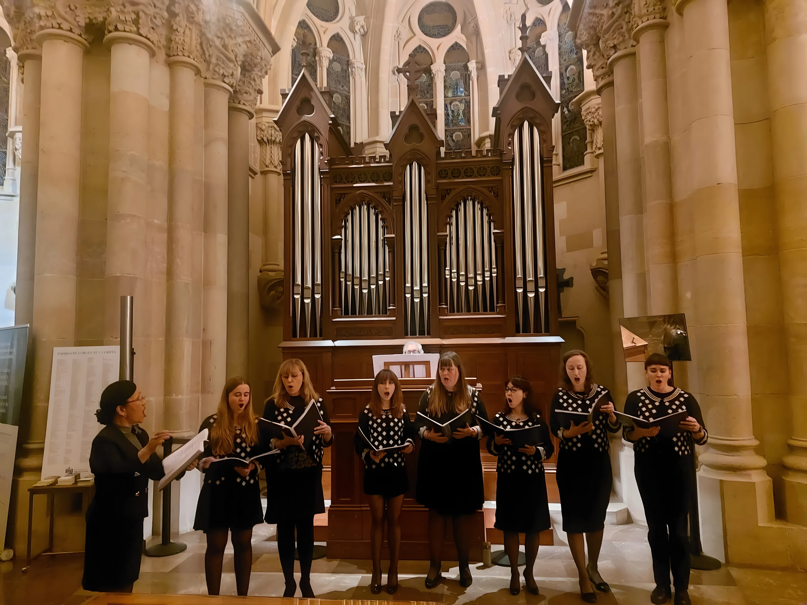
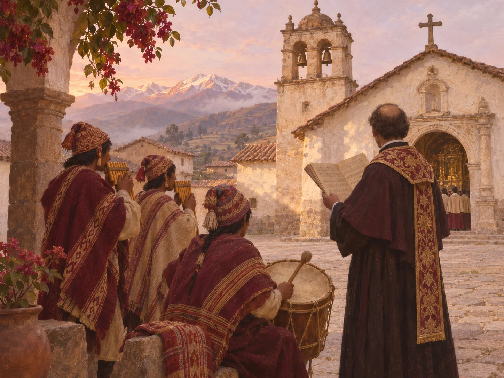
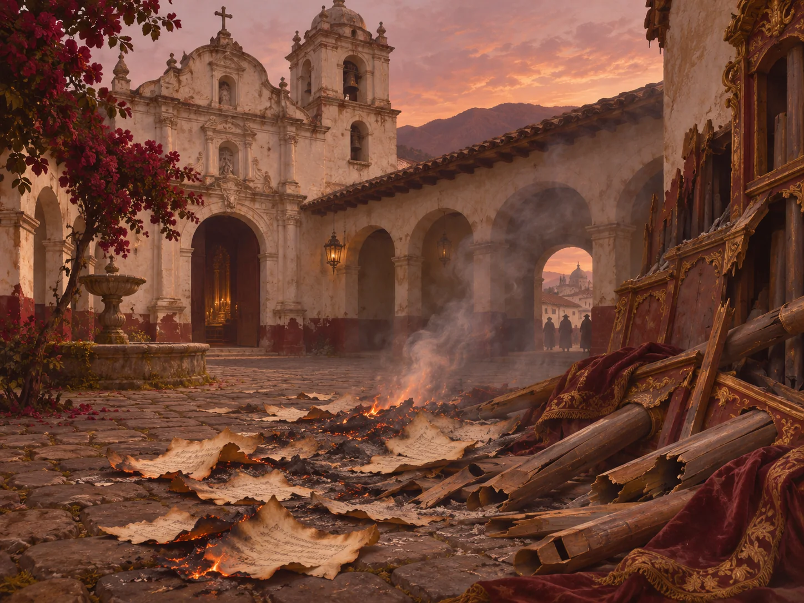
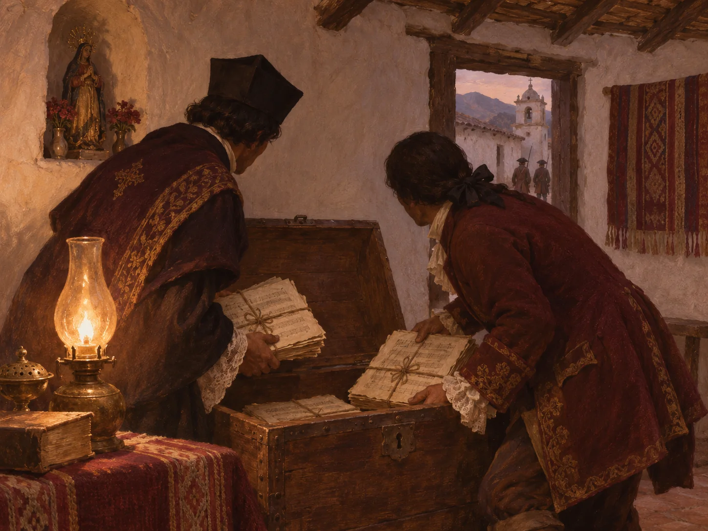
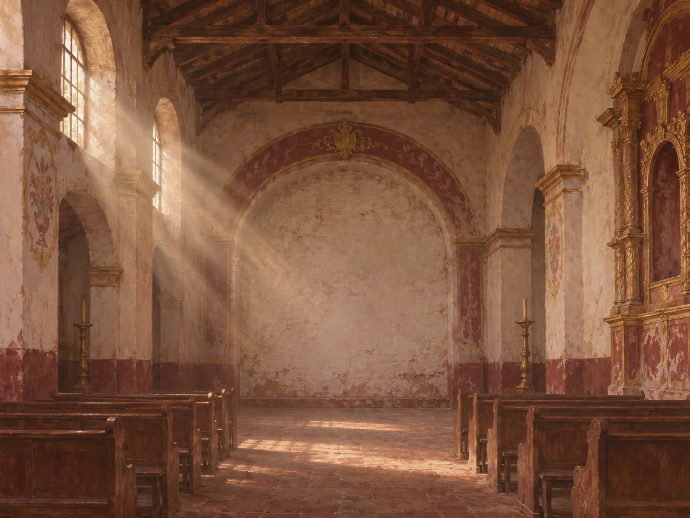
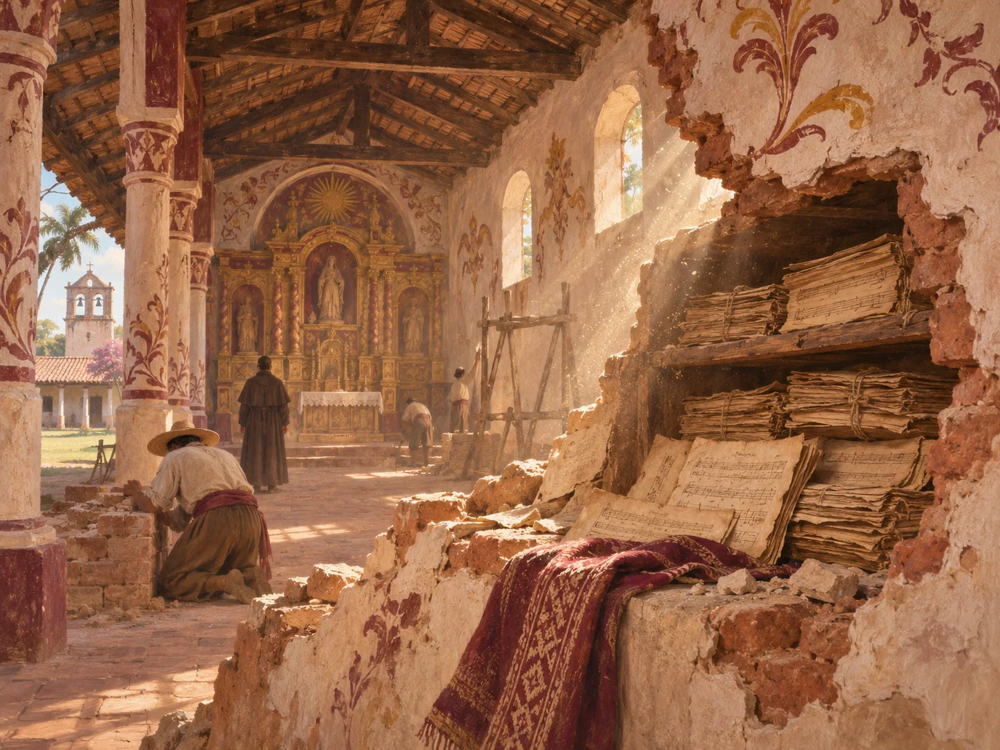
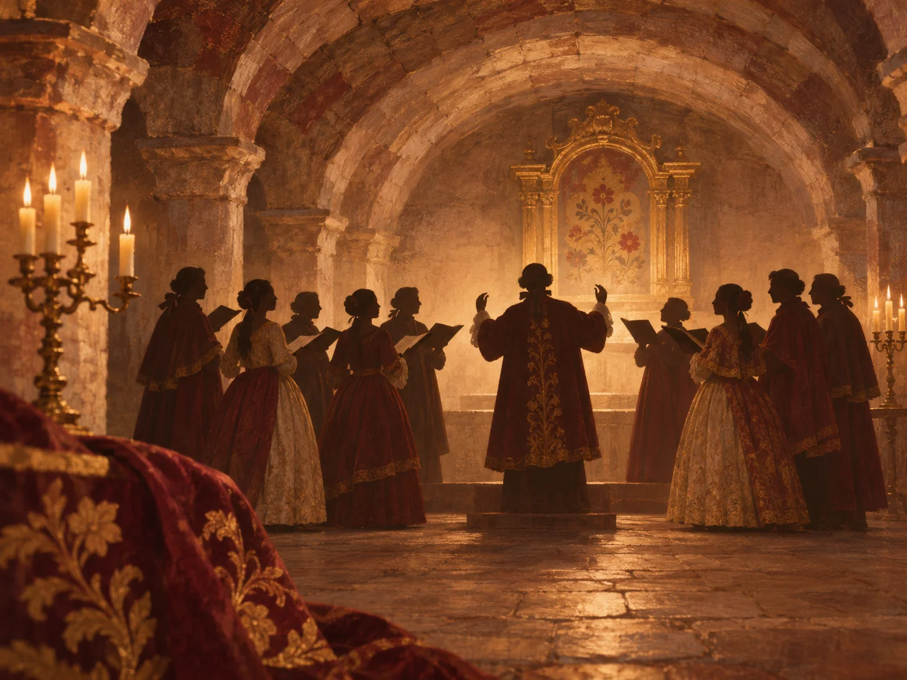

Grupo de cámara · Barcelona
La América musical
Música del Nuevo Mundo, de los siglos XVI al XVIII, cantada hoy en Barcelona: la música del Nuevo Mundo para este mundo.
Un grupo de cámara
Una idea de 2013, para cantar América
En 2013 Carmen inició la formación de un grupo de cámara para interpretar obras de América: tradicionales de cada país del continente y barrocas del centro y del sur.
Así nació Cantoría Re-Quinto. Carmen eligió el nombre por un instrumento presente en todos los países de América: el requinto, que además, al pronunciarlo, lleva «al quinto re», un sonido muy preciado por cualquier solista.

Historia
Música que se escondió para sobrevivir
Una historia en ocho capítulos: desde los órganos de las catedrales hasta una pared que se derribó en Bolivia y guardaba 5.000 partituras.
-

Cantoría Re-Quinto ante el órgano Capítulo 1Los organistas cruzan el océano
Durante el período colonial y de evangelización, entre los siglos XVI y XVIII, grandes compositores europeos se embarcaron hacia el Nuevo Mundo: Perú, México, Bolivia, Guatemala… Llegaban como organistas de catedrales.
No venían de paso. Se sentaban al órgano de templos recién levantados, en ciudades donde la liturgia se cantaba cada día y donde ya vivían pueblos con su propia música.
-

Ilustración creada con IA Capítulo 2Dos mundos que se escuchan
Hubo intercambio musical con los pueblos nativos. Ellos ya tenían sus propias formas de hacer música, y los músicos europeos las escucharon, las mezclaron y las llevaron a la liturgia.
De ese encuentro nacieron muchas obras de carácter litúrgico escritas en lenguas autóctonas. Una música que existía porque dos mundos se habían puesto a cantar juntos.
-

Ilustración creada con IA Capítulo 3Cae el dominio, llega la furia
Cuando cayó el dominio español, los músicos extranjeros regresaron a sus países. Se quedaron las obras, y se quedó la gente que las había cantado.
Los pueblos nativos, enfurecidos por la represión que habían vivido, se dirigieron a destruir y quemar todo lo que simbolizaba el yugo español. Lo que ardía era lo que representaba la dominación.
-

Ilustración creada con IA Capítulo 4Esconder para salvar
Sacerdotes, fiscales y personas cultas de los pueblos vieron que aquella música corría peligro. Y empezaron a esconderla de distintas formas: en cofres, detrás de muros, incluso en sus propias casas.
Ocultar una partitura era un acto de protección. No sabían cuánto duraría la tormenta, pero sabían que aquel legado no podía perderse.
-

Ilustración creada con IA Capítulo 5La distancia que salvó la música
Los pueblos enfurecidos llegaron pronto a las catedrales de países con buenas carreteras entre ciudades, como Venezuela, Colombia, Argentina y Brasil. Por eso, en esos países se conservó poco material o casi nada.
En cambio, en Bolivia, Guatemala, Ecuador y Paraguay no había caminos fáciles. Se llegaba a caballo, luego en burro y finalmente a pie: un viaje de unos dos meses. Ese tiempo fue el que tuvieron fiscales y personas cultas para proteger la música.
-

Ilustración creada con IA Capítulo 6Siglos de silencio
Y la música esperó. Durante siglos, dentro de paredes que nadie abría.
Ya en los años setenta comenzaron las remodelaciones de templos religiosos. Obras que tocaban muros antiguos, sin saber todavía lo que guardaban.
-

Ilustración creada con IA Capítulo 7La pared de Chiquitos
En la provincia de Chiquitos, en Bolivia, los arquitectos derribaron la pared de un templo que no correspondía a la arquitectura del resto del edificio.
Detrás encontraron unas 5.000 partituras ocultas. Y sobre el material había un mensaje escrito que explicaba las razones de haberlas escondido.
-

Ilustración creada con IA Capítulo 8Hoy, en Barcelona
En 2013, Carmen empezó a formar un grupo de cámara para llevar esa música a los escenarios: Cantoría Re-Quinto. Hoy canta esas partituras que sobrevivieron escondidas, en su idioma original y con la armonización de la época.
Es, en Barcelona, el único coro que canta este repertorio.
Esta música es la que presento al mundo a través de este grupo de cámara: la América musical de mediados del siglo XVI al XVIII. La música del Nuevo Mundo para este mundo.Carmen Moreno
Lo que canta hoy
Conciertos de Cantoría Re-Quinto
- 2019 · Primer concierto de música latinoamericana barroca y tradicional.
- 11 de noviembre de 2023 · Basílica y Cripta de la Sagrada Familia, con el Psalmus 6 de Hernando Franco (Puebla, 1611), ante los cónsules de Ecuador y México.
- 2 de mayo de 2024 · Jardí del Silenci, al aire libre, con los pájaros como inesperados coristas.
- 2025 y 2026 · Basílica y Cripta de la Sagrada Familia, Templo María Mitjancera de Totes les Gràcies y Templo Cristo Rey, colaborando además con la Asociación Cor Cremat.
Galería
Cantoría Re-Quinto, en escena
Fotografías del archivo de Carmen. Pulsa cualquiera para ampliarla.

Tu primera clase
¿Tu voz es ideal para cantar? Voy a enseñarte cómo.
Coméntame tu objetivo, proyecto o intención con el canto, acordamos una línea de trabajo vocal y seleccionamos el horario conveniente de forma online o presencial, aquí, en Barcelona.